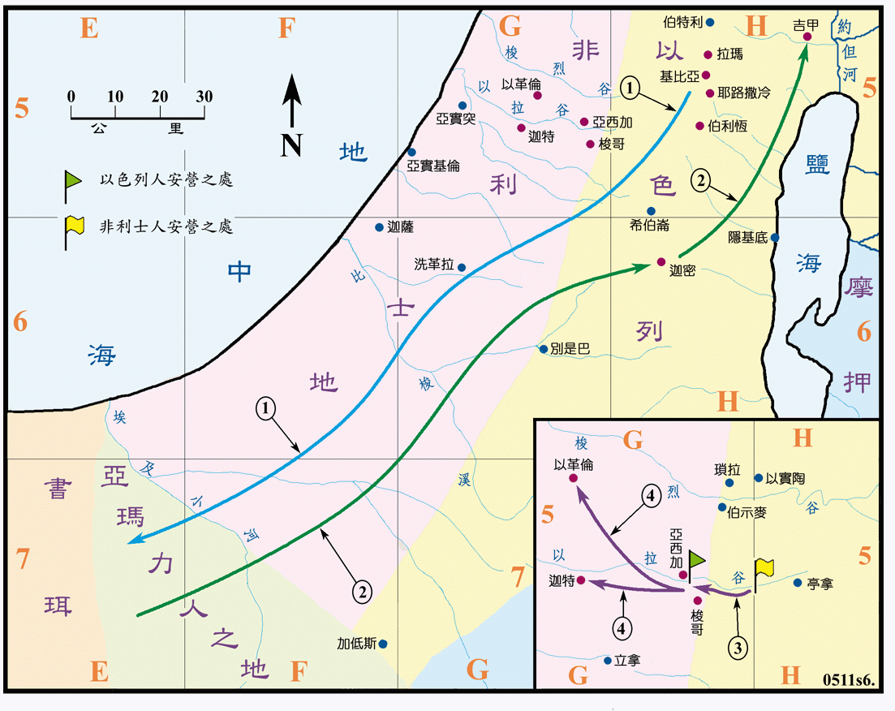

1027～1020BC

行动线说明
| 序号 | 圣经 | 说明 |
|---|---|---|
| 1 | 撒上15:1-9 | 扫罗领廿一万人攻打亚玛力人的京城 (1027BC?) ，杀尽了亚玛力人。 |
| 2 | 撒上15:10-31 | 扫罗掳掠了亚玛力人的牛羊和美物，经过迦密，在迦密立纪念碑，再回到吉甲，撒母耳也到吉甲，责备扫罗违背了耶和华的命令，耶和华厌弃他作王。 |
| 撒上16:1-13 | 撒母耳到伯利恒膏大卫作以色列王 (大卫约15 岁，1025BC?)。 | |
| 3 | 撒上17:1-51 | 非利士的巨人歌利亚对以色列人索战，无人能敌。大卫奉父命往战场探望兄长时，就击杀了歌利亚。 |
| 4 | 撒上17:51-53 | 歌利亚被杀，以色列乘胜追杀非利士人直到以革伦和迦特。 |
亚玛力人长期以加低斯以西的地区做根据地，其所属的位置和范围皆不明，此外也没有城市的名称出现在圣经中，他们一直是以色列人的强敌，此次扫罗是受命是要完全的灭绝他们，但扫罗并没有能遵照神的指示，他掳掠了上好的牛羊和美物而去，也留下了亚玛力王亚甲的性命，使得耶和华厌弃他作以色列的王。
撒母耳在伯利恒另膏大卫作以色列王，但大卫并未立刻登基，仍过着平常的生活。大卫在杀歌利亚之前，曾做过扫罗的音乐师，和为他拿兵器的人。杀歌利亚之后又服事扫罗，作战士长约有五年之久，然后逃亡扫罗的追杀又约有五年。
以拉谷是沿海平原通往耶路撒冷地区三条山谷隘道之一，谷口有迦特大城，具有非常重要的战略地位。